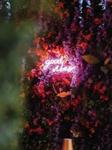
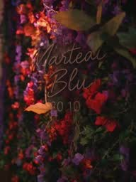
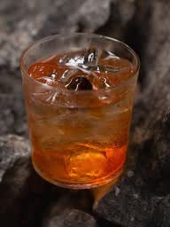
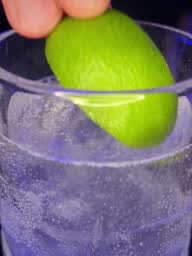
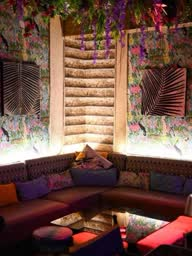

Dall’idea
al video
Dritto sul tuo
profilo
9:41
jueclubmontecatini
48post2.100follower312seguiti
Jué ClubCocktail bar · Bistrot · DJ set · Montecatini
ModificaCondividi profilo





Aperitivoal Jué
Aperitivoal Jué